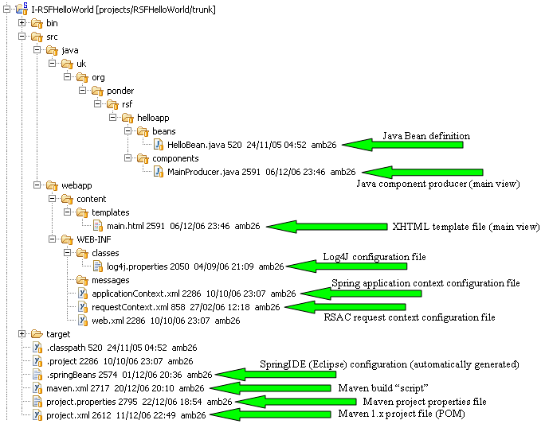

You can work with either binary or source distributions of RSF. The benefits of using the source distribution are a greater insight into the behaviour of the framework, and also the ability to use SpringIDE in Eclipse to provide navigable links from your Spring context files into RSFs core definitions. Personally I always acquire the source for every open source framework I spend significant time with, but your working style may differ.
If you opt for the binary route, there's nothing to be done to get this project to build and deploy other than typing maven. This will automatically fetch all the dependent JAR files and install them in your local respository.
If you go the source route, you will have checked out one of the tagged SVN externals from the Downloads page. Should you want to build the framework JARs[1], you will need to do this in order of dependency. While you can do this manually, you may like to install the dependency-compile Maven plugin which is described in Getting Started.
App structure#
Without further ado, let's have a look at the structure of our first RSF app.
Some of the structure here is defined by Maven - in particular the top-level src directory with java and webapp subdirectories, and the WEB-INF structure is clearly mandated by the Servlet spec. Most of the rest of the structure is defined by RSF itself, although it's worth bearing in mind that if you really need a different structure for some reason, this is quite easy to reconfigure.
Render cycle#
In order to make sense of this picture, we need to understand the basic RSF programming model and how this relates to its request cycle. In overview, during an RSF render cycle, there are three main actors - the view template which specifies the visual appearance of the view, the component tree which relates parts of the view template to the underlying bean model representing your business data and logic, and the bean model itself. These three sources of information are fused together during the render cycle to produce the required view by the RSF renderer, IKAT. This clean separation of responsibilities into three parts means that there is finally no direct dependence between your view representation and your bean model. Many frameworks promise this kind of "separation of concerns", but few deliver on it - interesting reading on this subject is Enforcing Strict Model-View Separation in Template Engines by Terence Parr.
by Terence Parr.
Here is a diagram representing the relationship of the actors during an RSF render cycle:

Our simple webapp defines a single view, whose ID is "main", whose definition of this view is split into two parts, a view template called main.xhtml, and a component producer implemented as a Java class called MainProducer.java.
View template#
The view template is always written as an XML file, in the same dialect as the required view, in this case XHTML. Here is the contents of main.html:
<!DOCTYPE html PUBLIC "-//W3C//DTD XHTML 1.0 Transitional//EN"
"http://www.w3.org/TR/xhtml1/DTD/xhtml1-transitional.dtd">
<html>
<head>
<title>Almost the simplest possible RSF application</title>
</head>
<body>
<div rsf:id="messagefield">The contents of this field will be rewritten
by the IKAT renderer.</div>
</body>
</html>
As you can see, this template is almost completely valid as XHTML, with the only addition of a single extra attribute on the div tag, specifying its ID. In fact this attribute is the only addition of RSF to XHTML. If you are concerned to make your templates validate as XML, this may be achieved by various means discussed on the TemplateValidity page, but in practice every HTML-based tool is quite happy to pretend this attribute is invisible, and it is simpler to ignore this issue in (X)HTML. Other XML dialects will be less forgiving.
Component Producer#
The view template is matched up with a component producer with a matching ViewID during the render cycle. Component producers can be specified in a number of ways, for example in pure Java code, in a separate XML template, or (if there's demand), in an "inline" format in the view template itself. Most (human) users of RSF will opt for the pure Java route (the XML format is more suited to automatically generated applications):
public class MainProducer implements ViewComponentProducer, DefaultView {
public String getViewID() {
return "main";
}
public void fillComponents(UIContainer tofill, ViewParameters origviewparams,
ComponentChecker checker) {
UIOutput.make(tofill, "messagefield", null, "#{helloBean.message}");
}
}
This producer creates a single component, which will be matched up with the annotated div tag from the template. This matching is performed on the basis of the ID supplied as the 2nd argument to UIOutput.make. This ID is called the 'RSF' ID of the tag, and will be matched with a component with the same ID taken from the same container. We have only one container here, corresponding to the entire page, so all the IDs are the same - the rsf:id on the tag in the template, the ID supplied to the component when it is constructed, and the full ID which will be rendered as the HTML/XML id attribute in the rendered result are all equal to "messagefield".
UIOutput is an example of an RSF Component, a lightweight object whose purpose is to be a "joint" between the view world and the model world, specifying an ID referring to a portion of the view template on one hand, and on the other hand specifying some rule for getting at data from the business model. The purpose of RSF components will be somewhat familiar if you have used Sun's JSF framework, with the difference that RSF components are vastly simpler since they have no behaviour and consist solely of a handful of fields.
Bean model#
The only unresolved reference in the puzzle so far is the value binding expression, "#{hellobean.message}". This is a reference from the component tree into the request bean model. Again, those familiar with JSF will recognise this as an example of EL, JSF's expression language. RSF's EL is vastly more simple than JSF/JSPs "JSTL", since it allows no logic - it is simply a "bean path" which navigates a tree of Java Bean objects by traversing properties. RSF's EL would be more accurately termed a "VL" or "Value Language".
This EL expression refers to a property named "message" defined on a bean named "hellobean". All RSF ELs refer to request-scope beans which are defined in a Spring-formatted configuration file - although they can also resolve onto standard Spring application-scope beans, this is generally less useful. In this case our webapp is set up to define all request-scope beans in a single file named requestContext.xml, which looks as follows:
<?xml version="1.0" encoding="UTF-8"?> <!DOCTYPE beans PUBLIC "-//SPRING//DTD BEAN//EN" "http://www.springframework.org/dtd/spring-beans.dtd"> <beans> <bean id="helloBean" class="uk.org.ponder.rsf.helloapp.beans.HelloBean"/> </beans>
This reference resolves on to the following Java class, defining a POJO representing a simple bean:
public class HelloBean {
private String message = "Hello Reasonable World!";
public void setMessage(String message) {
this.message = message;
}
public String getMessage() {
return message;
}
}
The property "message" has a predefined value which will be fetched from the model during the fixup stage of RSF rendering.
Spring configuration#
We have gone over all of the key functional parts of this app - everything that remains is the general "glue" which connects all the parts of the application together. Most of this lies in the Spring configuration file applicationContext.xml, which declares the producer "MainProducer" to RSF, defines the default view to be used in the case of a bad request, and defines which out of the request-scope beans in requestContext.xml are addressible via RSF EL. This last is extremely important, since by RSF's architecture it is prepared to accept arbitrary EL expressions coming in over the request, and a standing ability to reference any request-scope bean would be a serious security risk. Although our app only defines one request-scope bean, we need to declare it anyway:
<?xml version="1.0" encoding="UTF-8"?>
<!DOCTYPE beans PUBLIC "-//SPRING//DTD BEAN//EN"
"http://www.springframework.org/dtd/spring-beans.dtd">
<!-- RSF application scope Spring configuration file for the trivial "Hello
World" application. This defines a single view producer and a
single bean, and illustrates the completely minimal RSF application. In
fact, many beans appearing in blank-applicationContext.xml should *really*
be overridden in addition to these. -->
<beans>
<!-- Define the component producer for the main view -->
<bean id="main-view" class="uk.org.ponder.rsf.helloapp.producers.MainProducer"/>
<!-- Define the bean roots from the request scope file that are accessible
via incoming request URL (not strictly necessary for this app) -->
<bean parent="requestAddressibleParent">
<property name="value" value="helloBean"/>
</bean>
</beans>
web.xml#
The web.xml for this application specifies the locations of the Spring/Summer configuration files, and generally sets up your webapp to use RSF. This web.xml is standard and in general you should not need to change it for a standard Servlet application.
Next steps#
The key part missing from this application is any mention of the RSF action cycle, during which your application will be invoked and the bean model altered. For this we move on to a more complicated application showing off many more of RSF's features, the Logon Application.
[#1] Should you want to build all the libraries from source manually, you should use Maven to do this in the order: PonderUtilCore, J-ServletUtil, J-RSFUtil and then I-RSFHelloWorld. You need only do this once after you download the source distribution - this will download and install all Maven dependencies into your local repository, from where Eclipse will be able to find them.
You can post comments and questions on this page using the following blog. Please set your name using UserPreferences before posting.
Add new attachment
List of attachments
| Kind | Attachment Name | Size | Version | Date Modified | Author | Change note |
|---|---|---|---|---|---|---|
jpeg |
coffeebeans.jpeg | 24.0 kB | 1 | 12-Feb-2008 14:45 | JamesMarca | |
png |
rsf-render-cycle.png | 52.0 kB | 1 | 12-Feb-2008 14:51 | JamesMarca |
{kind=link}
{kind=link}
{kind=link}
{kind=link}
Documentation
Developers
Javadocs
Designers
Sample RSF Apps
Presentations
Acronyms
Downloads
Current Release
Trunk
Distributions
Old Versions
Community
Q&A
Forums
Mailing Lists
Issue Tracker
People
Design
Roadmap
Integrations
Concepts
Philosophy